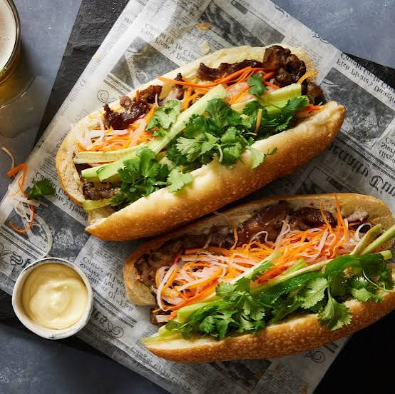
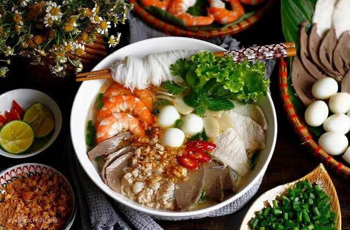
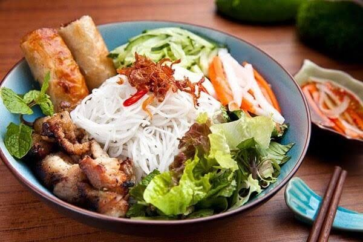

Trang chủ | Giới thiệu & Câu chuyện | Lịch trình Food Tour | Tin tức - Bài viết | Thư viện đa phương tiện | Liên hệ
Ẩm thực Thành phố Hồ Chí Minh không chỉ nổi tiếng bởi sự đa dạng trong hương vị mà còn chứa đựng những câu chuyện thú vị về lịch sử, văn hóa và con người. Mỗi món ăn đều góp phần tạo nên nét đặc trưng riêng của thành phố.
Từ những món ăn bình dân như cơm tấm, bánh mì, hủ tiếu đến những món ăn cao cấp, mỗi món đều mang trong mình một câu chuyện riêng. Những câu chuyện này không chỉ giúp chúng ta hiểu rõ hơn về nguồn gốc của món ăn mà còn là cách để chúng ta kết nối với lịch sử và văn hóa của Sài Gòn.

Cơm tấm ban đầu gắn liền với đời sống của người lao động bình dân, được chế biến từ những hạt gạo bị vỡ trong quá trình xay xát. Theo thời gian, món ăn được kết hợp với sườn nướng, bì, chả trứng và nước mắm chua ngọt. Ngày nay, cơm tấm đã trở thành một đặc sản nổi tiếng của Sài Gòn.
Cơm tấm không chỉ là món ăn mà còn là biểu tượng của sự sáng tạo và thích nghi của người dân Sài Gòn. Mỗi quán cơm tấm đều có cách chế biến riêng, tạo nên sự đa dạng trong hương vị và phong cách phục vụ.

Bánh mì Việt Nam có nguồn gốc từ bánh baguette của Pháp. Qua quá trình sáng tạo, người Việt đã kết hợp bánh mì với nhiều loại nhân như thịt nguội, chả lụa, pa-tê, dưa leo và rau thơm. Sự kết hợp này đã tạo nên hương vị đặc trưng và đưa bánh mì trở thành món ăn quen thuộc.
Bánh mì là món ăn nhanh tiện lợi, là biểu tượng của sự giao thoa văn hóa. Mỗi quán bánh mì đều có công thức riêng, từ cách nướng bánh đến cách chế biến nhân, tạo nên sự phong phú và đa dạng trong hương vị.

Hủ tiếu là món ăn thể hiện sự giao thoa văn hóa giữa nhiều cộng đồng, đặc biệt là người Việt, người Hoa và người Khmer. Với sợi bánh dai mềm, nước dùng ngọt thanh cùng các nguyên liệu như thịt heo, tôm và rau xanh, hủ tiếu đã trở thành món ăn quen thuộc của người dân Sài Gòn.
Hủ tiếu là một biểu tượng của sự giao thoa văn hóa Việt Nam. Mỗi quán hủ tiếu đều có cách chế biến riêng, tạo nên sự đa dạng trong hương vị và phong cách phục vụ.

Những hàng quán vỉa hè đã trở thành hình ảnh quen thuộc trên các con đường Sài Gòn. Từ bánh mì, hủ tiếu đến các món ăn vặt, tất cả tạo nên sự phong phú và gần gũi. Đây cũng là nơi mọi người gặp gỡ, trò chuyện và thưởng thức những món ăn bình dân.
Văn hóa ăn uống vỉa hè không chỉ là nơi thưởng thức ẩm thực mà còn là nơi kết nối cộng đồng. Mỗi quán vỉa hè đều có câu chuyện riêng, từ cách chế biến đến cách phục vụ, tạo nên sự đa dạng và phong phú trong trải nghiệm ẩm thực.
Ẩm thực đóng vai trò quan trọng trong đời sống tinh thần của người dân. Không chỉ đáp ứng nhu cầu ăn uống, các món ăn còn góp phần lưu giữ giá trị văn hóa, gắn kết con người và quảng bá hình ảnh Thành phố Hồ Chí Minh đến bạn bè quốc tế.
Mỗi món ăn Sài Gòn đều mang một câu chuyện riêng về lịch sử, văn hóa và con người. Những hương vị quen thuộc ấy đã góp phần tạo nên bản sắc độc đáo của ẩm thực Thành phố Hồ Chí Minh.
SAIGON FOOD TOUR - KHÁM PHÁ HƯƠNG VỊ SÀI GÒN